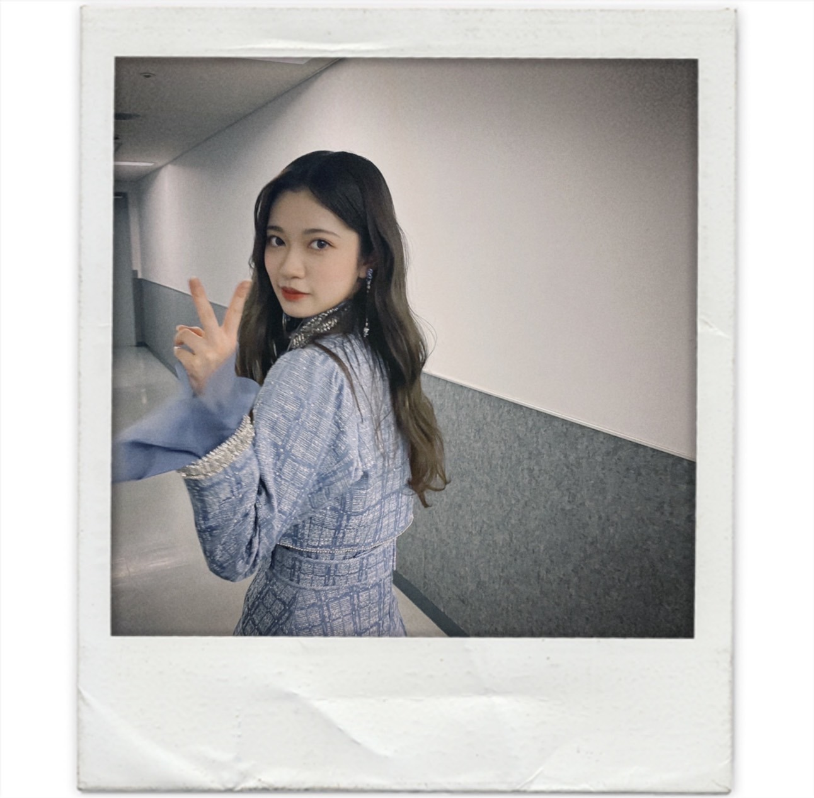
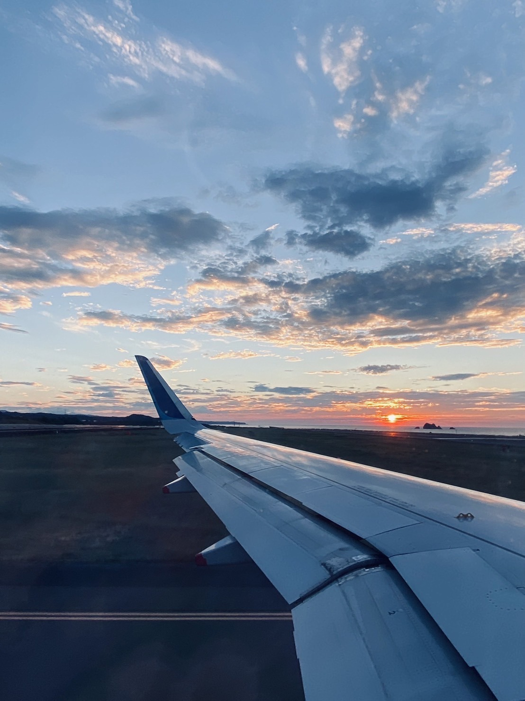

2021/0929Wedお知らせがあります。✨
少しずつ形になっているのが安心するような
このまま私だけの思い出として閉じ込めてしまいたいようか毎日色んな気持ちが湧いてきてしまいます。
でも、皆さんの元に届くことが完成だと思うので
11月9日無事に届くようにと毎日願っております。
発売されたらみんなで鑑賞会したいくらい
このページの撮影中はこんなことがあったんだよとか
お洋服にはこんなこだわりがあったんだよとか
今までの思い出話とか
卒業アルバムを同級生の友達と見て盛り上がるように写真集をみて思い出を共有したいです。
とにかく今は凄いドキドキしてます。
是非沢山支えてくれると心強いです。
本当に珍しくドキドキしています。
3タイプの表紙どうですかね。？
皆さんのお気に入りはありましたか。？
私は紙でひと足お先に見させていただいたのですが
この画質では伝わりきらない
紙だからこその良さがありました。
また画像とは違う雰囲気を感じられました。
実は裏表紙も凄くいいんですよー。✨
写真集公式Twitter
随時、Twitterの方でお知らせしていますので
是非そちらで詳細は追って頂けると嬉しいです。
オフショットもこれから更に載せますので
是非是非ー。☺️✨


全部雰囲気が違くて
私自身、全てお気に入りではありますが
中身はもっともっと1ページ1ページが濃ゆくて
どのページをめくっても
私らしさ全開だと思います。
まだ解禁前ということで詳しくは言えないのですが、、、
私が写真集をみて思った事は
え、蘭世ってこんなに。！！！！！！
って自分でもびっくりするくらい
自分の幅を改めて知れた気がしました。
どの場面も心からリラックスしていて
カメラにというより本当に大切な人と旅しているかのような表情をしていました。
1人でも多くの方とこの気持ちを共有したいです。
是非、11月9日発売
一緒に毎日盛り上がってくれたら嬉しいです。☺️✨
今日も1日お疲れ様でした。
短いブログではありますがまた更新させてください。
最近、コメントが多くて嬉しいです。
いつも見させてもらってます。☺️✨
メンバーのブログも見てるのですが
本当に元気もらえるのー。☺️✨
2021/0923Thuhappy birthday
卒業を決めてからは
いろんな乃木坂46としての最後を
噛み締めながら過ごしていましたが、、、
これからも生きている限りは続くお誕生日。
いや、形が無くなっても私がこういうお仕事をしたからこそ生きた証は永遠に残るんじゃないかなとか少し難しい話をしてみたり、、、
とにかく、沢山お祝いしてくれたら嬉しいですし
私からも沢山感謝を伝えさせて下さい。
出逢ってくれた全ての皆様に心から感謝しています。
無事、23歳になりました。
次の大きな一歩を踏み出そうとしている私です。
まだまだ青いかもしれませんが
中学2年生14歳でアイドルとして色んなことを
学び酸いも甘いも経験してきて
今9年目を走っている途中です。
同じ事を何年も続けるということは
意外にも難しい事だとも思うのですが
こんなに歩み続けたのに
まだ、23歳なのかと驚きもします、、、
素敵な女性にみえますか。
乃木坂46という場所でたくさん成長しました。
沢山愛してくれてありがとございました。
これからはもっともっともっともっと
自分らしく生きて素敵な人になります。
Instagramのストーリーにも載せたのですが
画質が落ちちゃうのでブログにも。
オフショットですがよかったら。
れなちがCMみたいって言ってくれました。
中身はもっと色々と、、、


私らしさが詰まっていると思います。
もう少ししたら色々解禁になると思うので
良かったら一緒に盛り上がってくれると嬉しいです。
それが一番のお誕生日プレゼントになります。☺️✨
沢山、楽しいや嬉しい気持ちを残りの時間は共有したいです。
前向きに小さくても確実な一歩を
私は変わらず歩んでいきます。
明日からも仲良くしてください。✨


2021/09/23
乃木坂46 寺田蘭世の最後のお誕生日ー。
2021/0917Fri
今回マシンガンレインでセンターというポジションに選んでもらいました。
ユニット曲など含めて5曲目となります。
それぞれ視点が違うから思う事考える事
解釈は人それぞれだと思いますが
いつもグループとしての分岐点となる曲で
センターに選んでもらっている気が私はしていました。
初めてのセンターを経験した
ボーダーという楽曲では乃木坂46初の研究生制度というものを2期生が経験し
そこから全員が乃木坂46になる瞬間の曲でした。
当時、自分の立場をふまえて
正直センターに選ばれるとは
思ってもいなかったですし
いまだにこの曲を歌うときだけは
当時を思い出して緊張します。
そのくらい
先輩や同期からのプレッシャーを感じて
なにか背負わなきゃいけないという
使命を感じていました。
でも、今では先輩方も大切に歌ってくれたり
2期生みんなで歌える曲になっていること
嬉しく思っています。
色んな立場の人に響くような歌詞
希望に溢れたような曲調
私はとても大好きです。
これからもみんなで歌い継いで欲しいです。
ブランコという楽曲では
武道館ライブをおこないました。
少しずつ乃木坂46が坂を登っていると
メンバー自身も噛み締めている中
当時高校生でようやく乃木坂46のメンバーだと
認められたばかりの私には複雑な心境でした。
この頃は自分の中にある
かっこいいを求められすぎて
笑えなくなる事もありました。
楽しいはずの
メンバーみんなでの撮影で笑いたいはずなのに
笑ったらみんなが思い描いてる
私の雰囲気が壊れちゃうんじゃないかなとか
強がってないと周りのみんなが立たないんじゃないかなとか
日常からその想いが心のどこかに染み込みすぎて
自分の本来の気持ちを見失いそうになってしまったり日々葛藤していました。
そんな経験があったからこそ
ここでは語りきれないくらい
乃木坂46と共に寺田蘭世として
大きな前進をし続け
坂をのぼっていくことができたと思います。
光が強い程、影も濃ゆくなるように
本当に大変なことも多かったです。
日々全力で振り返る時間もないままに
ただがむしゃらに歩んできましたが
辛かったことも
何故かこれで良かったと今では思えています。
あの瞬間があったから今の私があって
あの瞬間は安易かもしれませんが
私の1つの青春だったのだと
何度かセンターにたたせてもらって
何回も立てる人なんかそうそういません。
だからこその嬉しさと
何回も経験してしまったからこそ
沢山成長したからこそ視野は広がり
このパワーを色んなところにぶつける機会が
欲しかったなと同時に思うことも増えました。
常に私の頭の中には乃木坂46の事がありました。
小さな一歩でもと一日も歩みを止めたりせず
頑張ってまいりました。
そして今回
最後にまたセンターというポジションに立つことになりました。
またと使える自分が複雑です。
センターです。と発表されたとき
ここで頑張りすぎたのかもしれない
ここで頑張ったからこそ選ばれた
いろんな捉え方ができて
色々な感情が押し寄せてきました。
でも、長く乃木坂46にいるからこそ思えた
私なりの答えは選ばれたのだと
色んな意見があるとは思います。
選ばれた理由は私達もいつも知り得ません
自分で自分を探していつも答えを探しています。
当事者の答え
これが、私の宿命だったんだとそう捉えました。
それらは自分の力だけでは
どうにもならないこともありました。
ここで語れる事は全てではない
それは他のメンバーもそうだと思います。
だから是非、優しくしてあげてください。
きっと見えないところで努力している子もいます。
自分の大切な人には
優しく愛や感謝を伝えてあげてください。
私はそれに沢山支えられて頑張れました。
誰にも言えない悩みも山ほどありました。
でも、全てこの順序じゃなかったら
私はもっと違う私だったかもしれない
そう思うと私はここまで乃木坂46
2期生として
かっこよく生きてこれた事を誇りに思っています。
きっとこの経験は生きて
これからの長い長い人生もっともっと素敵なものになります。
私はここから離れることを決心しました。
乃木坂46を卒業します。
大好きな場所でした。
最後まで私らしく終えたいです。
完成されたMVをみて
自分の背中に乃木坂46の文字があった時に
こんなに大きくなったんだなって
初めて自分を少し褒めてもいいんじゃないかなと思えました。
記念すべき10周年にこの場所に立てた事は誇りに思います。
ファンの皆さん心からありがとう
色んな巡り合わせで出逢えた大切な人達です。
見つけてくれてありがとう。
これからも私はどこに居てもこのまま変わらず
頑張るのでお互いこの先の長い未来も
無理はしすぎないで
適度に頑張っていきましょう。
本当に出逢ってくれてありがとう。
これからも皆さん仲良くしてください。
先輩の皆さん
先に卒業しちゃってごめんなさい。
同志のように扱ってくれて
時には優しく
時には先輩として、ライバルとして
対等に扱ってくれてありがとうございました。
沢山、楽しかった事も辛かった事もありましたが
ふとした瞬間のくだらない時間が
とても楽しかったなーと
卒業生も多くなってしまい
たまにあの時に戻りたいなって思う事も
ここ数年は多かったです。
またいつか他の卒業生も含めて
みんなで思い出話で盛り上がる日楽しみにしてます。
集めるのはかりんちゃんに任せたいと思います。
メンバーのみんなとは
これから毎日のようには会えなくなるけど
乃木坂46がもっともっと
大きくなることを願っています。
頑張ってる人に
頑張れっていうのは私は苦手だけど
何年後かに私ここにいたんだよーって
乃木坂46の2期生だったんだよーって自慢できるくらい
ずっと乃木坂46が坂を登り続けられるグループである事を願っています。
5期生ちゃんも心優しい子が沢山いますように。
でも、今の私があるのは
ママ、パパのお陰。
こんなに素敵に産んでくれてありがとう。
お陰で沢山の素敵な経験と素敵な人に出逢えました。
この中身も見た目もママとパパそっくりで
2人に似てるなーって感じられたとき
愛おしく思う瞬間があります。
2人に似たからこそどんな事があっても
自分らしく居たかったのかもしれません。
優しく、自由でもありあたたかさがある
人としてとても尊敬できる最高の2人です。
本当に大好きで私の自慢であり誇りです。
これからはもっと幸せにしてあげるので
宜しくー。☺️✨
今月9月はお誕生日月でもあるのですが
お誕生日は貰うだけでなくありがとうを
沢山伝えられる日だと私は思っているので
残り少ない時間ではありますが
明日が永遠の別れというわけではありませんし
一緒に毎日を噛み締めつつも今まで通り穏やかに
楽しんで過ごしたいです。
感謝をより伝えられる期間にしたいです。
これからも仲良くしてください。☺️✨




2021/09/17
乃木坂46 寺田蘭世
2021/0911Satげんまいちゃ
解禁になるまで凄く不安でした、、、
数年前の私は凄く写真集というものに憧れて
いつか出せたら素敵なことだなーと思っていましたが
ここ最近の私はそこに対して
寧ろ不安を感じることの方が多くなっていきました。
私は個性というものに対してそれはその人にしか持てない武器と解釈しているけどそう思わない人もいて
それらを踏み捻られたらどうしようとか
自分らしさを大切にしてきたからこそ
自分らしくいらなかったときの怖さを感じていました。
きっと人生においても大切な節目になる
それは自分自身がアイドルが好きで
自分が買っていた側だったからこそ思うことがあり
アイドルにとって写真集はどういったものか
アイドルになる前の解釈
アイドルになってからの解釈
当たり前のことでは無いとしみじみ感じていたから
こそ自分の中で色々葛藤がありました。
でも、そんなときに
私の写真集が決まった事を知ったメンバー達が
蘭世自身でプロデュースして欲しいとか
蘭世にしか出せないものがあるからそれがみたいと
言ってくれて
ほぼ毎日ように一緒に居て
長年苦楽を共にしている人達が
かけてくれた言葉の説得力はとてもパワーになり
気持ちが楽になり凄く自信に繋がりました。
特にみなみちゃんと松村さんは
写真集が決定したときからずっと優しい言葉をかけてくれたのはとても心強かったです。☺️
みなみちゃんは撮影前日も
みなみがついていこうかーって言ってくれたのが
凄くほっこりしたよー。
本当にありがとうだよー。☺️✨
決まってからというもの長い期間
1人で嬉しさやプレッシャーいろんな感情を
行き来していました。
写真集という1つの作品を出せることは
当たり前ではないからこそ
今までのアイドルとしての努力が身を結び認められ
それが形になる事の喜びと凄さ
私もここまで頑張ってこれたんだなーと
自分を認めてあげようと浸る日もあれば
普段の活動を続きながらも
ロケ地や撮影のテーマや衣装
私物ということもあり準備に追われたり
向き合えば向き合うほど
考えれば考えてしまうほど
やっぱりどうしても私なんかがってネガティブな方に考えてしまったり後ろめたくなる日もありました。
沢山時間をかけて
大切な人達と話し合いました。
いろんな人の話を聞くうちに
私よりも喜んでくれる人がいて
どんなに不安に思う瞬間があっても
1人でも喜んでくれる人が居るならいいなと思えるようになっていました。
自分のこの瞬間
等身大の姿を綺麗に残してもらうのは
誰もが出来るわけではなくて
例えば自分がおばあちゃんになったとき
昔はこんなことしていて
若い時も変わらないでしょって
自慢できる人、作品にしたいなーと思うようになれて
こんなこともあったねーって写真集を通して
振り返られるのって
本当に贅沢だなーって
とにかく今は嬉しいお知らせが出来たことと
無事形になりそうなこと
皆さんに報告ができたことにほっとしています、、、
本当に私のプライベート私服盛り沢山です。
着数も凄く凄く凄く多く挑戦しました。☺️✨
まだまだ発売されるまでドキドキしているのですが
一緒に盛り上げて支えてくれると心強いです。
全ての人に感謝して
私も発売まで皆さんと一緒にわくわくしたり
ドキドキしながら楽しめたらいいなーと思います。
ブログは勿論
大好きなモバメ
沢山の方に見てもらえるように引き続きInstagram
この度Twitterも始まりました。
Twitterの方はスタッフさんと
私が赤ちゃんの頃から大切にしている
相方も同然青いクマの
ひょろひょろくんが担当しております。
特にひょろひょろくんが色々と宣伝頑張ってくれているのでよかったら覗いてあげてください。
この時期なかなか
会えないからこそ繋がりを感じられるように
沢山楽しんで貰えるように頑張りますね。
なので是非、仲良くして下さい。
これからも宜しくお願いいたします。☺️✨

MVについても書きたいのですが
長過ぎちゃうと思うので
また、近々私の思いをよかったら聞いてください。
そして、
ももこ最後までお疲れ様ー。
全員で乃木坂46だと私は思っているけど
最後の3期生だけでの活動を見ていて
やっぱり同期は特別なんだなーと感じました。
じゅんな、みりあ、本当にお疲れ様。
本当に辛いことが沢山あって
幼い頃の私達にも抱えきれないほど
それぞれに悩みがあったと思います。
でも、だからこそとても力強くて魅力的な女性に
成長したと思います。
私達よく頑張ったよー。☺️✨
また、2期生会をひらける様になるのも楽しみだし
もっと大人になって
乃木坂46時代を語ったりするのも楽しそうだなー
みんなに会うのも楽しみです。
これからもここで学んだことは生きると思うし
絶対幸せになってください。✨
数少ない同期です。
おばあちゃんになっても仲良くしてねー。
ばいばいです。